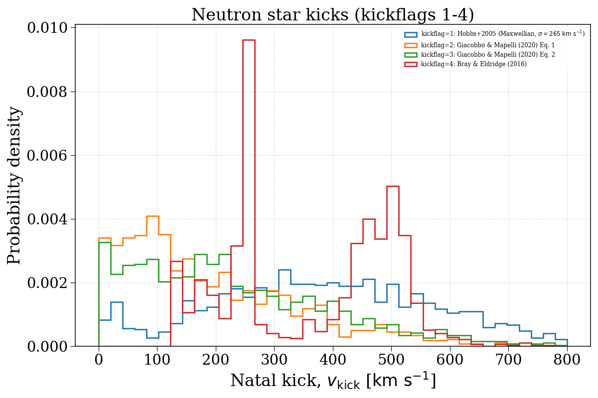
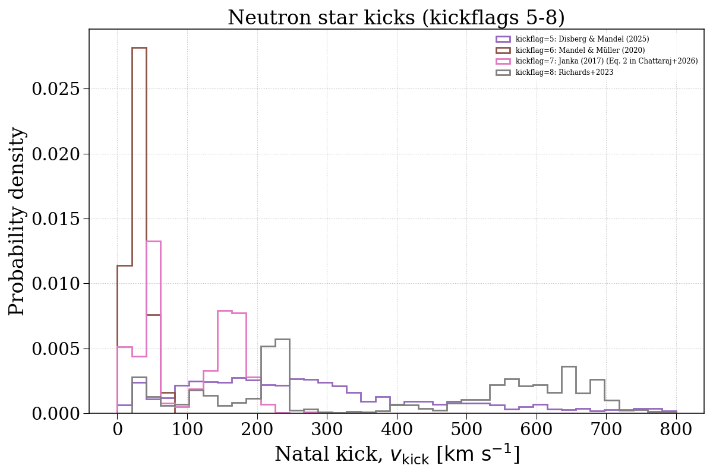
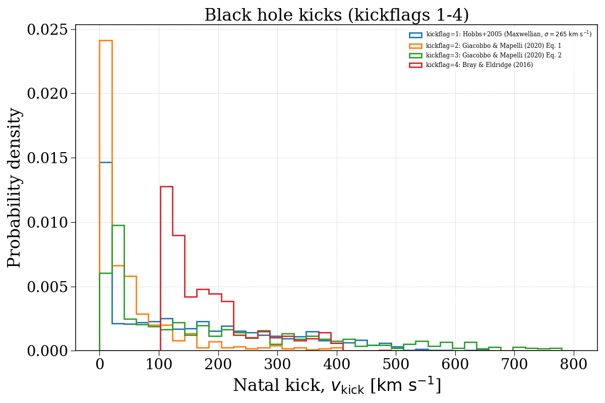
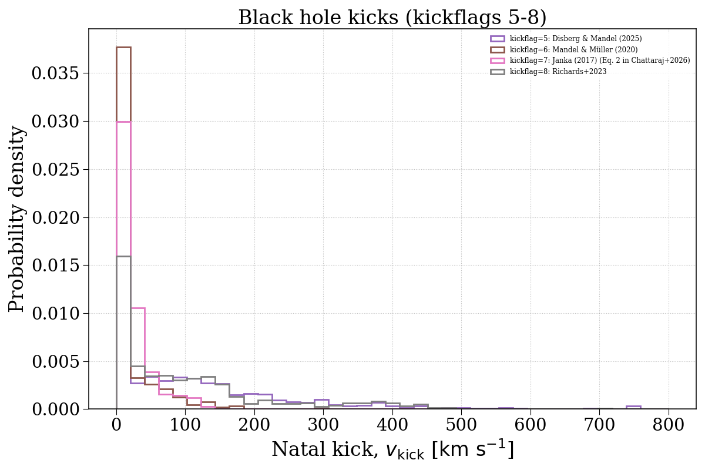

Note
Go to the end to download the full example code.
kickflag¶
This example demonstrates how changing the kickflag parameter can affect the natal kick velocity distributions of compact objects. We separate this into neutron stars and black holes.




Evolving population with kickflag = 1...
Evolving: 0%| | 0/2039 [00:00<?, ?sys/s]
Evolving: 1%| | 19/2039 [00:00<00:11, 171.62sys/s]
Evolving: 2%|▏ | 37/2039 [00:00<00:12, 164.91sys/s]
Evolving: 3%|▎ | 54/2039 [00:00<00:12, 153.62sys/s]
Evolving: 3%|▎ | 70/2039 [00:00<00:17, 113.02sys/s]
Evolving: 5%|▍ | 93/2039 [00:00<00:13, 142.31sys/s]
Evolving: 5%|▌ | 110/2039 [00:00<00:14, 137.78sys/s]
Evolving: 6%|▌ | 125/2039 [00:00<00:14, 129.41sys/s]
Evolving: 7%|▋ | 139/2039 [00:01<00:18, 104.51sys/s]
Evolving: 8%|▊ | 164/2039 [00:01<00:13, 136.49sys/s]
Evolving: 9%|▉ | 182/2039 [00:01<00:12, 144.95sys/s]
Evolving: 10%|▉ | 200/2039 [00:01<00:12, 149.69sys/s]
Evolving: 11%|█ | 217/2039 [00:01<00:12, 149.14sys/s]
Evolving: 11%|█▏ | 233/2039 [00:01<00:12, 140.08sys/s]
Evolving: 12%|█▏ | 250/2039 [00:01<00:12, 147.53sys/s]
Evolving: 13%|█▎ | 267/2039 [00:01<00:11, 153.24sys/s]
Evolving: 14%|█▍ | 283/2039 [00:02<00:11, 148.83sys/s]
Evolving: 15%|█▍ | 301/2039 [00:02<00:16, 106.22sys/s]
Evolving: 16%|█▌ | 331/2039 [00:02<00:14, 117.53sys/s]
Evolving: 18%|█▊ | 359/2039 [00:02<00:14, 117.75sys/s]
Evolving: 19%|█▊ | 381/2039 [00:02<00:13, 124.48sys/s]
Evolving: 20%|██ | 409/2039 [00:03<00:11, 144.66sys/s]
Evolving: 21%|██ | 430/2039 [00:03<00:10, 152.07sys/s]
Evolving: 22%|██▏ | 447/2039 [00:03<00:10, 149.14sys/s]
Evolving: 23%|██▎ | 464/2039 [00:03<00:10, 152.54sys/s]
Evolving: 24%|██▎ | 480/2039 [00:03<00:12, 124.55sys/s]
Evolving: 24%|██▍ | 498/2039 [00:03<00:11, 136.66sys/s]
Evolving: 25%|██▌ | 513/2039 [00:03<00:12, 119.28sys/s]
Evolving: 26%|██▌ | 526/2039 [00:03<00:12, 118.75sys/s]
Evolving: 26%|██▋ | 539/2039 [00:04<00:13, 115.11sys/s]
Evolving: 27%|██▋ | 555/2039 [00:04<00:11, 124.87sys/s]
Evolving: 28%|██▊ | 577/2039 [00:04<00:10, 139.98sys/s]
Evolving: 29%|██▉ | 592/2039 [00:04<00:11, 125.21sys/s]
Evolving: 30%|███ | 614/2039 [00:04<00:12, 111.02sys/s]
Evolving: 32%|███▏ | 643/2039 [00:04<00:10, 132.15sys/s]
Evolving: 33%|███▎ | 665/2039 [00:04<00:09, 149.22sys/s]
Evolving: 33%|███▎ | 683/2039 [00:05<00:08, 155.53sys/s]
Evolving: 34%|███▍ | 700/2039 [00:05<00:10, 131.40sys/s]
Evolving: 35%|███▌ | 720/2039 [00:05<00:09, 138.40sys/s]
Evolving: 36%|███▋ | 742/2039 [00:05<00:08, 155.88sys/s]
Evolving: 37%|███▋ | 759/2039 [00:05<00:08, 149.05sys/s]
Evolving: 38%|███▊ | 775/2039 [00:05<00:08, 151.40sys/s]
Evolving: 39%|███▉ | 794/2039 [00:05<00:08, 152.33sys/s]
Evolving: 40%|███▉ | 810/2039 [00:05<00:08, 147.06sys/s]
Evolving: 41%|████ | 826/2039 [00:06<00:08, 148.29sys/s]
Evolving: 41%|████▏ | 843/2039 [00:06<00:08, 144.98sys/s]
Evolving: 42%|████▏ | 858/2039 [00:06<00:08, 138.92sys/s]
Evolving: 43%|████▎ | 874/2039 [00:06<00:12, 94.60sys/s]
Evolving: 45%|████▍ | 911/2039 [00:06<00:07, 143.36sys/s]
Evolving: 46%|████▌ | 929/2039 [00:06<00:07, 148.03sys/s]
Evolving: 46%|████▋ | 946/2039 [00:07<00:09, 115.81sys/s]
Evolving: 47%|████▋ | 960/2039 [00:07<00:09, 116.54sys/s]
Evolving: 48%|████▊ | 987/2039 [00:07<00:09, 106.19sys/s]
Evolving: 49%|████▉ | 1009/2039 [00:07<00:08, 122.23sys/s]
Evolving: 50%|█████ | 1024/2039 [00:07<00:08, 118.79sys/s]
Evolving: 51%|█████▏ | 1048/2039 [00:07<00:07, 132.46sys/s]
Evolving: 52%|█████▏ | 1063/2039 [00:08<00:08, 119.30sys/s]
Evolving: 53%|█████▎ | 1076/2039 [00:08<00:08, 110.34sys/s]
Evolving: 54%|█████▎ | 1093/2039 [00:08<00:07, 121.21sys/s]
Evolving: 54%|█████▍ | 1111/2039 [00:08<00:07, 126.54sys/s]
Evolving: 55%|█████▌ | 1126/2039 [00:08<00:06, 130.87sys/s]
Evolving: 56%|█████▌ | 1140/2039 [00:08<00:07, 118.02sys/s]
Evolving: 57%|█████▋ | 1162/2039 [00:08<00:06, 138.97sys/s]
Evolving: 58%|█████▊ | 1180/2039 [00:08<00:05, 147.19sys/s]
Evolving: 59%|█████▊ | 1196/2039 [00:09<00:07, 118.50sys/s]
Evolving: 59%|█████▉ | 1210/2039 [00:09<00:07, 106.24sys/s]
Evolving: 60%|█████▉ | 1222/2039 [00:09<00:07, 108.07sys/s]
Evolving: 61%|██████ | 1248/2039 [00:09<00:05, 137.13sys/s]
Evolving: 62%|██████▏ | 1265/2039 [00:09<00:05, 141.00sys/s]
Evolving: 63%|██████▎ | 1282/2039 [00:09<00:05, 144.59sys/s]
Evolving: 64%|██████▎ | 1297/2039 [00:09<00:05, 143.84sys/s]
Evolving: 64%|██████▍ | 1315/2039 [00:09<00:05, 132.26sys/s]
Evolving: 66%|██████▌ | 1336/2039 [00:10<00:04, 151.17sys/s]
Evolving: 66%|██████▋ | 1352/2039 [00:10<00:05, 118.74sys/s]
Evolving: 67%|██████▋ | 1374/2039 [00:10<00:05, 132.80sys/s]
Evolving: 68%|██████▊ | 1389/2039 [00:10<00:05, 124.41sys/s]
Evolving: 69%|██████▉ | 1409/2039 [00:10<00:04, 139.62sys/s]
Evolving: 70%|██████▉ | 1424/2039 [00:10<00:05, 114.08sys/s]
Evolving: 70%|███████ | 1437/2039 [00:10<00:05, 112.46sys/s]
Evolving: 71%|███████ | 1450/2039 [00:11<00:05, 98.74sys/s]
Evolving: 73%|███████▎ | 1481/2039 [00:11<00:04, 130.65sys/s]
Evolving: 74%|███████▎ | 1503/2039 [00:11<00:03, 149.17sys/s]
Evolving: 74%|███████▍ | 1519/2039 [00:11<00:03, 149.69sys/s]
Evolving: 75%|███████▌ | 1538/2039 [00:11<00:03, 148.18sys/s]
Evolving: 76%|███████▌ | 1554/2039 [00:11<00:03, 149.40sys/s]
Evolving: 77%|███████▋ | 1572/2039 [00:11<00:03, 150.70sys/s]
Evolving: 78%|███████▊ | 1588/2039 [00:12<00:03, 145.30sys/s]
Evolving: 79%|███████▉ | 1609/2039 [00:12<00:02, 158.36sys/s]
Evolving: 80%|███████▉ | 1626/2039 [00:12<00:03, 110.53sys/s]
Evolving: 81%|████████ | 1656/2039 [00:12<00:02, 147.02sys/s]
Evolving: 82%|████████▏ | 1674/2039 [00:12<00:02, 126.59sys/s]
Evolving: 83%|████████▎ | 1700/2039 [00:12<00:02, 151.29sys/s]
Evolving: 84%|████████▍ | 1718/2039 [00:12<00:02, 151.29sys/s]
Evolving: 85%|████████▌ | 1735/2039 [00:13<00:02, 147.68sys/s]
Evolving: 86%|████████▌ | 1751/2039 [00:13<00:01, 148.78sys/s]
Evolving: 87%|████████▋ | 1767/2039 [00:13<00:01, 150.96sys/s]
Evolving: 87%|████████▋ | 1783/2039 [00:13<00:01, 143.06sys/s]
Evolving: 88%|████████▊ | 1800/2039 [00:13<00:01, 148.45sys/s]
Evolving: 89%|████████▉ | 1816/2039 [00:13<00:01, 150.10sys/s]
Evolving: 90%|████████▉ | 1832/2039 [00:13<00:01, 147.53sys/s]
Evolving: 91%|█████████ | 1847/2039 [00:13<00:01, 109.30sys/s]
Evolving: 92%|█████████▏| 1875/2039 [00:14<00:01, 143.87sys/s]
Evolving: 93%|█████████▎| 1892/2039 [00:14<00:01, 106.55sys/s]
Evolving: 94%|█████████▍| 1920/2039 [00:14<00:00, 140.15sys/s]
Evolving: 95%|█████████▌| 1938/2039 [00:14<00:00, 112.59sys/s]
Evolving: 97%|█████████▋| 1968/2039 [00:14<00:00, 145.76sys/s]
Evolving: 97%|█████████▋| 1987/2039 [00:14<00:00, 143.55sys/s]
Evolving: 98%|█████████▊| 2005/2039 [00:15<00:00, 146.73sys/s]
Evolving: 99%|█████████▉| 2022/2039 [00:15<00:00, 131.94sys/s]
Evolving: 100%|█████████▉| 2037/2039 [00:15<00:00, 135.12sys/s]
Evolving: 100%|██████████| 2039/2039 [00:15<00:00, 133.33sys/s]
[Time taken: 15.5606 seconds]
Evolving population with kickflag = 2...
Evolving: 0%| | 0/2039 [00:00<?, ?sys/s]
Evolving: 0%| | 10/2039 [00:00<00:21, 94.54sys/s]
Evolving: 1%| | 24/2039 [00:00<00:25, 80.25sys/s]
Evolving: 3%|▎ | 53/2039 [00:00<00:13, 151.74sys/s]
Evolving: 3%|▎ | 71/2039 [00:00<00:17, 114.43sys/s]
Evolving: 5%|▍ | 94/2039 [00:00<00:13, 143.47sys/s]
Evolving: 5%|▌ | 111/2039 [00:00<00:14, 134.80sys/s]
Evolving: 6%|▌ | 127/2039 [00:00<00:13, 140.20sys/s]
Evolving: 7%|▋ | 143/2039 [00:01<00:16, 115.47sys/s]
Evolving: 8%|▊ | 164/2039 [00:01<00:14, 133.79sys/s]
Evolving: 9%|▉ | 179/2039 [00:01<00:13, 137.23sys/s]
Evolving: 10%|▉ | 196/2039 [00:01<00:12, 143.14sys/s]
Evolving: 10%|█ | 213/2039 [00:01<00:12, 148.53sys/s]
Evolving: 11%|█ | 229/2039 [00:01<00:13, 137.77sys/s]
Evolving: 12%|█▏ | 246/2039 [00:01<00:12, 145.43sys/s]
Evolving: 13%|█▎ | 262/2039 [00:01<00:11, 149.37sys/s]
Evolving: 14%|█▎ | 279/2039 [00:02<00:11, 151.33sys/s]
Evolving: 14%|█▍ | 295/2039 [00:02<00:11, 149.96sys/s]
Evolving: 15%|█▌ | 311/2039 [00:02<00:14, 119.31sys/s]
Evolving: 16%|█▌ | 331/2039 [00:02<00:15, 109.77sys/s]
Evolving: 18%|█▊ | 359/2039 [00:02<00:14, 118.45sys/s]
Evolving: 19%|█▊ | 381/2039 [00:02<00:13, 118.44sys/s]
Evolving: 20%|██ | 410/2039 [00:03<00:10, 150.35sys/s]
Evolving: 21%|██ | 427/2039 [00:03<00:10, 151.33sys/s]
Evolving: 22%|██▏ | 444/2039 [00:03<00:11, 142.54sys/s]
Evolving: 23%|██▎ | 460/2039 [00:03<00:10, 145.15sys/s]
Evolving: 23%|██▎ | 476/2039 [00:03<00:14, 111.12sys/s]
Evolving: 25%|██▍ | 500/2039 [00:03<00:11, 137.48sys/s]
Evolving: 25%|██▌ | 516/2039 [00:03<00:12, 124.15sys/s]
Evolving: 26%|██▌ | 531/2039 [00:04<00:11, 129.59sys/s]
Evolving: 27%|██▋ | 546/2039 [00:04<00:11, 131.96sys/s]
Evolving: 28%|██▊ | 561/2039 [00:04<00:11, 125.22sys/s]
Evolving: 28%|██▊ | 578/2039 [00:04<00:10, 135.59sys/s]
Evolving: 29%|██▉ | 593/2039 [00:04<00:12, 114.56sys/s]
Evolving: 30%|███ | 614/2039 [00:04<00:12, 111.45sys/s]
Evolving: 32%|███▏ | 643/2039 [00:04<00:10, 133.29sys/s]
Evolving: 32%|███▏ | 660/2039 [00:05<00:09, 137.90sys/s]
Evolving: 33%|███▎ | 681/2039 [00:05<00:09, 146.41sys/s]
Evolving: 34%|███▍ | 697/2039 [00:05<00:09, 134.38sys/s]
Evolving: 35%|███▍ | 712/2039 [00:05<00:10, 130.35sys/s]
Evolving: 36%|███▌ | 732/2039 [00:05<00:09, 143.94sys/s]
Evolving: 37%|███▋ | 747/2039 [00:05<00:08, 144.37sys/s]
Evolving: 37%|███▋ | 762/2039 [00:05<00:08, 142.86sys/s]
Evolving: 38%|███▊ | 777/2039 [00:05<00:09, 139.27sys/s]
Evolving: 39%|███▉ | 796/2039 [00:05<00:08, 152.72sys/s]
Evolving: 40%|███▉ | 812/2039 [00:06<00:08, 152.73sys/s]
Evolving: 41%|████ | 828/2039 [00:06<00:08, 144.23sys/s]
Evolving: 41%|████▏ | 843/2039 [00:06<00:08, 143.07sys/s]
Evolving: 42%|████▏ | 858/2039 [00:06<00:08, 141.85sys/s]
Evolving: 43%|████▎ | 873/2039 [00:06<00:08, 141.37sys/s]
Evolving: 44%|████▎ | 888/2039 [00:06<00:10, 111.52sys/s]
Evolving: 45%|████▍ | 910/2039 [00:06<00:08, 129.80sys/s]
Evolving: 46%|████▌ | 929/2039 [00:06<00:07, 143.81sys/s]
Evolving: 46%|████▋ | 945/2039 [00:07<00:09, 114.89sys/s]
Evolving: 47%|████▋ | 958/2039 [00:07<00:10, 104.39sys/s]
Evolving: 48%|████▊ | 987/2039 [00:07<00:11, 94.01sys/s]
Evolving: 50%|█████ | 1024/2039 [00:07<00:08, 116.21sys/s]
Evolving: 51%|█████▏ | 1048/2039 [00:07<00:07, 130.27sys/s]
Evolving: 52%|█████▏ | 1063/2039 [00:08<00:08, 119.83sys/s]
Evolving: 53%|█████▎ | 1076/2039 [00:08<00:08, 109.04sys/s]
Evolving: 54%|█████▍ | 1097/2039 [00:08<00:07, 126.11sys/s]
Evolving: 55%|█████▍ | 1115/2039 [00:08<00:06, 135.69sys/s]
Evolving: 55%|█████▌ | 1130/2039 [00:08<00:07, 126.90sys/s]
Evolving: 56%|█████▌ | 1144/2039 [00:08<00:07, 121.81sys/s]
Evolving: 57%|█████▋ | 1161/2039 [00:08<00:06, 131.91sys/s]
Evolving: 58%|█████▊ | 1180/2039 [00:09<00:06, 140.17sys/s]
Evolving: 59%|█████▊ | 1195/2039 [00:09<00:07, 116.23sys/s]
Evolving: 59%|█████▉ | 1208/2039 [00:09<00:08, 98.96sys/s]
Evolving: 60%|██████ | 1231/2039 [00:09<00:06, 125.61sys/s]
Evolving: 61%|██████ | 1248/2039 [00:09<00:05, 134.85sys/s]
Evolving: 62%|██████▏ | 1263/2039 [00:09<00:05, 137.03sys/s]
Evolving: 63%|██████▎ | 1278/2039 [00:09<00:05, 130.40sys/s]
Evolving: 63%|██████▎ | 1293/2039 [00:10<00:06, 119.14sys/s]
Evolving: 64%|██████▍ | 1315/2039 [00:10<00:05, 134.51sys/s]
Evolving: 66%|██████▌ | 1337/2039 [00:10<00:04, 152.80sys/s]
Evolving: 66%|██████▋ | 1353/2039 [00:10<00:05, 116.98sys/s]
Evolving: 67%|██████▋ | 1374/2039 [00:10<00:05, 131.68sys/s]
Evolving: 68%|██████▊ | 1389/2039 [00:10<00:04, 135.26sys/s]
Evolving: 69%|██████▉ | 1404/2039 [00:10<00:04, 135.88sys/s]
Evolving: 70%|██████▉ | 1419/2039 [00:11<00:05, 105.70sys/s]
Evolving: 70%|███████ | 1432/2039 [00:11<00:06, 97.45sys/s]
Evolving: 71%|███████ | 1445/2039 [00:11<00:05, 102.87sys/s]
Evolving: 72%|███████▏ | 1477/2039 [00:11<00:03, 150.67sys/s]
Evolving: 73%|███████▎ | 1494/2039 [00:11<00:03, 145.09sys/s]
Evolving: 74%|███████▍ | 1513/2039 [00:11<00:03, 151.31sys/s]
Evolving: 75%|███████▌ | 1530/2039 [00:11<00:03, 144.00sys/s]
Evolving: 76%|███████▌ | 1548/2039 [00:11<00:03, 150.38sys/s]
Evolving: 77%|███████▋ | 1567/2039 [00:11<00:02, 159.45sys/s]
Evolving: 78%|███████▊ | 1584/2039 [00:12<00:03, 138.40sys/s]
Evolving: 79%|███████▊ | 1603/2039 [00:12<00:02, 150.43sys/s]
Evolving: 79%|███████▉ | 1619/2039 [00:12<00:03, 114.90sys/s]
Evolving: 81%|████████ | 1647/2039 [00:12<00:02, 148.73sys/s]
Evolving: 82%|████████▏ | 1665/2039 [00:12<00:03, 112.41sys/s]
Evolving: 83%|████████▎ | 1699/2039 [00:12<00:02, 150.65sys/s]
Evolving: 84%|████████▍ | 1719/2039 [00:13<00:02, 157.74sys/s]
Evolving: 85%|████████▌ | 1738/2039 [00:13<00:02, 150.35sys/s]
Evolving: 86%|████████▌ | 1755/2039 [00:13<00:01, 150.71sys/s]
Evolving: 87%|████████▋ | 1773/2039 [00:13<00:01, 150.52sys/s]
Evolving: 88%|████████▊ | 1791/2039 [00:13<00:01, 156.27sys/s]
Evolving: 89%|████████▊ | 1808/2039 [00:13<00:01, 152.32sys/s]
Evolving: 90%|████████▉ | 1825/2039 [00:13<00:01, 139.79sys/s]
Evolving: 90%|█████████ | 1840/2039 [00:14<00:01, 101.76sys/s]
Evolving: 92%|█████████▏| 1876/2039 [00:14<00:01, 149.90sys/s]
Evolving: 93%|█████████▎| 1894/2039 [00:14<00:01, 118.95sys/s]
Evolving: 94%|█████████▍| 1923/2039 [00:14<00:00, 148.04sys/s]
Evolving: 95%|█████████▌| 1941/2039 [00:14<00:00, 116.80sys/s]
Evolving: 97%|█████████▋| 1969/2039 [00:14<00:00, 136.00sys/s]
Evolving: 98%|█████████▊| 1989/2039 [00:15<00:00, 148.31sys/s]
Evolving: 98%|█████████▊| 2007/2039 [00:15<00:00, 150.96sys/s]
Evolving: 99%|█████████▉| 2024/2039 [00:15<00:00, 139.58sys/s]
Evolving: 100%|██████████| 2039/2039 [00:15<00:00, 131.99sys/s]
[Time taken: 15.6630 seconds]
Evolving population with kickflag = 3...
Evolving: 0%| | 0/2039 [00:00<?, ?sys/s]
Evolving: 1%| | 11/2039 [00:00<00:21, 93.70sys/s]
Evolving: 1%| | 24/2039 [00:00<00:24, 81.75sys/s]
Evolving: 3%|▎ | 51/2039 [00:00<00:13, 143.46sys/s]
Evolving: 3%|▎ | 67/2039 [00:00<00:18, 103.95sys/s]
Evolving: 5%|▍ | 94/2039 [00:00<00:13, 144.59sys/s]
Evolving: 5%|▌ | 112/2039 [00:00<00:13, 147.95sys/s]
Evolving: 6%|▋ | 129/2039 [00:00<00:13, 144.45sys/s]
Evolving: 7%|▋ | 145/2039 [00:01<00:15, 119.98sys/s]
Evolving: 8%|▊ | 161/2039 [00:01<00:14, 129.18sys/s]
Evolving: 9%|▉ | 179/2039 [00:01<00:13, 134.55sys/s]
Evolving: 10%|▉ | 196/2039 [00:01<00:13, 138.25sys/s]
Evolving: 11%|█ | 216/2039 [00:01<00:12, 149.22sys/s]
Evolving: 11%|█▏ | 232/2039 [00:01<00:12, 142.21sys/s]
Evolving: 12%|█▏ | 249/2039 [00:01<00:12, 139.36sys/s]
Evolving: 13%|█▎ | 268/2039 [00:01<00:11, 149.08sys/s]
Evolving: 14%|█▍ | 285/2039 [00:02<00:11, 152.06sys/s]
Evolving: 15%|█▍ | 301/2039 [00:02<00:16, 106.25sys/s]
Evolving: 16%|█▌ | 331/2039 [00:02<00:14, 113.87sys/s]
Evolving: 18%|█▊ | 359/2039 [00:02<00:13, 127.86sys/s]
Evolving: 19%|█▊ | 381/2039 [00:02<00:13, 123.50sys/s]
Evolving: 20%|█▉ | 404/2039 [00:03<00:11, 143.33sys/s]
Evolving: 21%|██ | 424/2039 [00:03<00:10, 153.72sys/s]
Evolving: 22%|██▏ | 441/2039 [00:03<00:10, 153.58sys/s]
Evolving: 22%|██▏ | 458/2039 [00:03<00:10, 144.17sys/s]
Evolving: 23%|██▎ | 474/2039 [00:03<00:14, 109.23sys/s]
Evolving: 24%|██▍ | 497/2039 [00:03<00:11, 130.71sys/s]
Evolving: 25%|██▌ | 513/2039 [00:03<00:12, 124.21sys/s]
Evolving: 26%|██▌ | 527/2039 [00:04<00:12, 125.76sys/s]
Evolving: 27%|██▋ | 541/2039 [00:04<00:12, 124.70sys/s]
Evolving: 27%|██▋ | 555/2039 [00:04<00:11, 123.89sys/s]
Evolving: 28%|██▊ | 576/2039 [00:04<00:10, 144.33sys/s]
Evolving: 29%|██▉ | 592/2039 [00:04<00:12, 119.91sys/s]
Evolving: 30%|███ | 614/2039 [00:04<00:12, 111.51sys/s]
Evolving: 32%|███▏ | 643/2039 [00:04<00:10, 139.24sys/s]
Evolving: 32%|███▏ | 660/2039 [00:05<00:09, 138.59sys/s]
Evolving: 33%|███▎ | 683/2039 [00:05<00:09, 149.19sys/s]
Evolving: 34%|███▍ | 699/2039 [00:05<00:08, 148.93sys/s]
Evolving: 35%|███▌ | 715/2039 [00:05<00:09, 140.58sys/s]
Evolving: 36%|███▌ | 734/2039 [00:05<00:08, 147.30sys/s]
Evolving: 37%|███▋ | 750/2039 [00:05<00:09, 130.96sys/s]
Evolving: 38%|███▊ | 773/2039 [00:05<00:08, 150.70sys/s]
Evolving: 39%|███▉ | 791/2039 [00:05<00:08, 149.78sys/s]
Evolving: 40%|███▉ | 811/2039 [00:06<00:07, 162.08sys/s]
Evolving: 41%|████ | 828/2039 [00:06<00:08, 150.04sys/s]
Evolving: 41%|████▏ | 844/2039 [00:06<00:07, 151.65sys/s]
Evolving: 42%|████▏ | 860/2039 [00:06<00:08, 144.49sys/s]
Evolving: 43%|████▎ | 875/2039 [00:06<00:11, 99.36sys/s]
Evolving: 45%|████▍ | 910/2039 [00:06<00:07, 149.42sys/s]
Evolving: 46%|████▌ | 929/2039 [00:06<00:07, 143.60sys/s]
Evolving: 46%|████▋ | 946/2039 [00:07<00:09, 115.08sys/s]
Evolving: 47%|████▋ | 960/2039 [00:07<00:09, 114.79sys/s]
Evolving: 48%|████▊ | 987/2039 [00:07<00:09, 106.55sys/s]
Evolving: 49%|████▉ | 1009/2039 [00:07<00:08, 122.75sys/s]
Evolving: 50%|█████ | 1024/2039 [00:07<00:08, 118.29sys/s]
Evolving: 51%|█████▏ | 1048/2039 [00:07<00:07, 138.69sys/s]
Evolving: 52%|█████▏ | 1064/2039 [00:08<00:09, 99.98sys/s]
Evolving: 54%|█████▎ | 1091/2039 [00:08<00:07, 126.17sys/s]
Evolving: 54%|█████▍ | 1107/2039 [00:08<00:07, 130.20sys/s]
Evolving: 55%|█████▌ | 1123/2039 [00:08<00:06, 132.09sys/s]
Evolving: 56%|█████▌ | 1138/2039 [00:08<00:07, 122.35sys/s]
Evolving: 57%|█████▋ | 1155/2039 [00:08<00:06, 132.66sys/s]
Evolving: 57%|█████▋ | 1172/2039 [00:08<00:06, 141.50sys/s]
Evolving: 58%|█████▊ | 1188/2039 [00:09<00:07, 106.91sys/s]
Evolving: 59%|█████▉ | 1204/2039 [00:09<00:08, 99.73sys/s]
Evolving: 60%|██████ | 1233/2039 [00:09<00:06, 131.12sys/s]
Evolving: 61%|██████▏ | 1251/2039 [00:09<00:05, 139.88sys/s]
Evolving: 62%|██████▏ | 1268/2039 [00:09<00:05, 140.99sys/s]
Evolving: 63%|██████▎ | 1285/2039 [00:09<00:05, 146.61sys/s]
Evolving: 64%|██████▍ | 1301/2039 [00:09<00:05, 146.29sys/s]
Evolving: 65%|██████▍ | 1317/2039 [00:10<00:05, 138.60sys/s]
Evolving: 66%|██████▌ | 1339/2039 [00:10<00:04, 159.16sys/s]
Evolving: 67%|██████▋ | 1356/2039 [00:10<00:05, 125.89sys/s]
Evolving: 67%|██████▋ | 1374/2039 [00:10<00:05, 124.34sys/s]
Evolving: 68%|██████▊ | 1388/2039 [00:10<00:05, 122.60sys/s]
Evolving: 69%|██████▉ | 1408/2039 [00:10<00:04, 140.30sys/s]
Evolving: 70%|██████▉ | 1423/2039 [00:10<00:05, 112.85sys/s]
Evolving: 70%|███████ | 1436/2039 [00:11<00:05, 106.23sys/s]
Evolving: 71%|███████ | 1448/2039 [00:11<00:05, 108.40sys/s]
Evolving: 72%|███████▏ | 1477/2039 [00:11<00:03, 151.06sys/s]
Evolving: 73%|███████▎ | 1494/2039 [00:11<00:03, 139.54sys/s]
Evolving: 74%|███████▍ | 1512/2039 [00:11<00:03, 148.03sys/s]
Evolving: 75%|███████▍ | 1528/2039 [00:11<00:03, 147.68sys/s]
Evolving: 76%|███████▌ | 1545/2039 [00:11<00:03, 150.41sys/s]
Evolving: 77%|███████▋ | 1561/2039 [00:11<00:03, 151.35sys/s]
Evolving: 77%|███████▋ | 1578/2039 [00:11<00:02, 155.90sys/s]
Evolving: 78%|███████▊ | 1594/2039 [00:12<00:02, 152.10sys/s]
Evolving: 79%|███████▉ | 1610/2039 [00:12<00:02, 154.15sys/s]
Evolving: 80%|███████▉ | 1626/2039 [00:12<00:03, 118.62sys/s]
Evolving: 81%|████████ | 1650/2039 [00:12<00:02, 142.86sys/s]
Evolving: 82%|████████▏ | 1666/2039 [00:12<00:03, 106.43sys/s]
Evolving: 83%|████████▎ | 1698/2039 [00:12<00:02, 147.21sys/s]
Evolving: 84%|████████▍ | 1716/2039 [00:12<00:02, 150.81sys/s]
Evolving: 85%|████████▌ | 1734/2039 [00:13<00:02, 151.37sys/s]
Evolving: 86%|████████▌ | 1751/2039 [00:13<00:02, 137.28sys/s]
Evolving: 87%|████████▋ | 1766/2039 [00:13<00:02, 122.71sys/s]
Evolving: 87%|████████▋ | 1780/2039 [00:13<00:02, 115.37sys/s]
Evolving: 88%|████████▊ | 1797/2039 [00:13<00:02, 118.88sys/s]
Evolving: 89%|████████▉ | 1815/2039 [00:13<00:01, 126.23sys/s]
Evolving: 90%|████████▉ | 1829/2039 [00:13<00:01, 127.69sys/s]
Evolving: 90%|█████████ | 1843/2039 [00:14<00:02, 90.43sys/s]
Evolving: 92%|█████████▏| 1871/2039 [00:14<00:01, 127.88sys/s]
Evolving: 93%|█████████▎| 1887/2039 [00:14<00:01, 133.68sys/s]
Evolving: 93%|█████████▎| 1903/2039 [00:14<00:01, 98.45sys/s]
Evolving: 95%|█████████▍| 1931/2039 [00:14<00:00, 127.15sys/s]
Evolving: 95%|█████████▌| 1947/2039 [00:15<00:00, 103.32sys/s]
Evolving: 96%|█████████▋| 1967/2039 [00:15<00:00, 117.52sys/s]
Evolving: 97%|█████████▋| 1982/2039 [00:15<00:00, 120.45sys/s]
Evolving: 98%|█████████▊| 1996/2039 [00:15<00:00, 111.28sys/s]
Evolving: 99%|█████████▊| 2009/2039 [00:15<00:00, 106.89sys/s]
Evolving: 99%|█████████▉| 2022/2039 [00:15<00:00, 94.01sys/s]
Evolving: 100%|█████████▉| 2033/2039 [00:15<00:00, 91.08sys/s]
Evolving: 100%|██████████| 2039/2039 [00:15<00:00, 128.62sys/s]
[Time taken: 16.0764 seconds]
Evolving population with kickflag = 4...
Evolving: 0%| | 0/2039 [00:00<?, ?sys/s]
Evolving: 0%| | 4/2039 [00:00<00:52, 38.67sys/s]
Evolving: 1%| | 19/2039 [00:00<00:29, 69.32sys/s]
Evolving: 2%|▏ | 36/2039 [00:00<00:19, 102.85sys/s]
Evolving: 2%|▏ | 48/2039 [00:00<00:20, 95.48sys/s]
Evolving: 3%|▎ | 59/2039 [00:00<00:20, 95.94sys/s]
Evolving: 3%|▎ | 69/2039 [00:00<00:23, 83.56sys/s]
Evolving: 4%|▍ | 80/2039 [00:00<00:23, 84.21sys/s]
Evolving: 5%|▍ | 93/2039 [00:01<00:20, 93.88sys/s]
Evolving: 5%|▌ | 109/2039 [00:01<00:18, 105.85sys/s]
Evolving: 6%|▌ | 124/2039 [00:01<00:18, 102.10sys/s]
Evolving: 7%|▋ | 137/2039 [00:01<00:21, 89.32sys/s]
Evolving: 8%|▊ | 157/2039 [00:01<00:17, 108.88sys/s]
Evolving: 9%|▊ | 174/2039 [00:01<00:15, 120.91sys/s]
Evolving: 9%|▉ | 187/2039 [00:01<00:16, 111.08sys/s]
Evolving: 10%|█ | 205/2039 [00:01<00:14, 125.41sys/s]
Evolving: 11%|█ | 219/2039 [00:02<00:15, 118.75sys/s]
Evolving: 12%|█▏ | 235/2039 [00:02<00:14, 128.09sys/s]
Evolving: 12%|█▏ | 249/2039 [00:02<00:14, 122.09sys/s]
Evolving: 13%|█▎ | 265/2039 [00:02<00:13, 128.54sys/s]
Evolving: 14%|█▎ | 280/2039 [00:02<00:13, 131.09sys/s]
Evolving: 15%|█▍ | 297/2039 [00:02<00:13, 130.74sys/s]
Evolving: 15%|█▌ | 311/2039 [00:02<00:17, 96.70sys/s]
Evolving: 16%|█▌ | 331/2039 [00:03<00:17, 96.20sys/s]
Evolving: 18%|█▊ | 359/2039 [00:03<00:15, 107.29sys/s]
Evolving: 19%|█▊ | 381/2039 [00:03<00:15, 108.35sys/s]
Evolving: 20%|██ | 409/2039 [00:03<00:11, 138.09sys/s]
Evolving: 21%|██ | 427/2039 [00:03<00:11, 139.99sys/s]
Evolving: 22%|██▏ | 443/2039 [00:03<00:11, 136.69sys/s]
Evolving: 22%|██▏ | 458/2039 [00:04<00:11, 132.33sys/s]
Evolving: 23%|██▎ | 472/2039 [00:04<00:15, 100.36sys/s]
Evolving: 25%|██▍ | 503/2039 [00:04<00:11, 137.28sys/s]
Evolving: 25%|██▌ | 519/2039 [00:04<00:11, 134.14sys/s]
Evolving: 26%|██▌ | 534/2039 [00:04<00:11, 129.81sys/s]
Evolving: 27%|██▋ | 548/2039 [00:04<00:11, 126.02sys/s]
Evolving: 28%|██▊ | 562/2039 [00:04<00:11, 128.14sys/s]
Evolving: 28%|██▊ | 580/2039 [00:05<00:10, 137.50sys/s]
Evolving: 29%|██▉ | 595/2039 [00:05<00:11, 125.95sys/s]
Evolving: 30%|███ | 614/2039 [00:05<00:13, 107.91sys/s]
Evolving: 32%|███▏ | 643/2039 [00:05<00:10, 128.47sys/s]
Evolving: 32%|███▏ | 660/2039 [00:05<00:10, 136.23sys/s]
Evolving: 33%|███▎ | 675/2039 [00:05<00:10, 135.80sys/s]
Evolving: 34%|███▍ | 690/2039 [00:05<00:09, 136.27sys/s]
Evolving: 35%|███▍ | 704/2039 [00:05<00:09, 136.58sys/s]
Evolving: 35%|███▌ | 722/2039 [00:06<00:09, 146.00sys/s]
Evolving: 36%|███▌ | 738/2039 [00:06<00:08, 146.70sys/s]
Evolving: 37%|███▋ | 753/2039 [00:06<00:09, 130.69sys/s]
Evolving: 38%|███▊ | 773/2039 [00:06<00:08, 143.41sys/s]
Evolving: 39%|███▊ | 788/2039 [00:06<00:08, 142.26sys/s]
Evolving: 40%|███▉ | 808/2039 [00:06<00:07, 157.15sys/s]
Evolving: 40%|████ | 825/2039 [00:06<00:07, 152.37sys/s]
Evolving: 41%|████ | 841/2039 [00:06<00:07, 151.56sys/s]
Evolving: 42%|████▏ | 857/2039 [00:07<00:08, 144.22sys/s]
Evolving: 43%|████▎ | 872/2039 [00:07<00:08, 145.10sys/s]
Evolving: 44%|████▎ | 887/2039 [00:07<00:10, 114.14sys/s]
Evolving: 45%|████▍ | 908/2039 [00:07<00:08, 135.18sys/s]
Evolving: 45%|████▌ | 924/2039 [00:07<00:08, 135.62sys/s]
Evolving: 46%|████▌ | 939/2039 [00:07<00:11, 97.38sys/s]
Evolving: 47%|████▋ | 957/2039 [00:07<00:09, 109.83sys/s]
Evolving: 48%|████▊ | 987/2039 [00:08<00:09, 109.01sys/s]
Evolving: 49%|████▉ | 1009/2039 [00:08<00:08, 124.13sys/s]
Evolving: 50%|█████ | 1024/2039 [00:08<00:09, 107.51sys/s]
Evolving: 51%|█████▏ | 1049/2039 [00:08<00:08, 112.73sys/s]
Evolving: 52%|█████▏ | 1064/2039 [00:08<00:09, 101.39sys/s]
Evolving: 54%|█████▎ | 1091/2039 [00:09<00:07, 131.76sys/s]
Evolving: 54%|█████▍ | 1107/2039 [00:09<00:06, 135.93sys/s]
Evolving: 55%|█████▌ | 1123/2039 [00:09<00:07, 124.20sys/s]
Evolving: 56%|█████▌ | 1138/2039 [00:09<00:07, 124.16sys/s]
Evolving: 57%|█████▋ | 1159/2039 [00:09<00:06, 140.82sys/s]
Evolving: 58%|█████▊ | 1175/2039 [00:09<00:05, 144.80sys/s]
Evolving: 58%|█████▊ | 1191/2039 [00:09<00:07, 107.01sys/s]
Evolving: 59%|█████▉ | 1204/2039 [00:10<00:08, 98.60sys/s]
Evolving: 60%|██████ | 1230/2039 [00:10<00:06, 130.15sys/s]
Evolving: 61%|██████ | 1246/2039 [00:10<00:05, 136.56sys/s]
Evolving: 62%|██████▏ | 1262/2039 [00:10<00:05, 139.29sys/s]
Evolving: 63%|██████▎ | 1278/2039 [00:10<00:05, 141.80sys/s]
Evolving: 63%|██████▎ | 1294/2039 [00:10<00:05, 137.76sys/s]
Evolving: 64%|██████▍ | 1313/2039 [00:10<00:04, 146.21sys/s]
Evolving: 65%|██████▌ | 1329/2039 [00:10<00:04, 143.09sys/s]
Evolving: 66%|██████▌ | 1344/2039 [00:10<00:05, 131.80sys/s]
Evolving: 67%|██████▋ | 1358/2039 [00:11<00:05, 124.33sys/s]
Evolving: 67%|██████▋ | 1374/2039 [00:11<00:05, 122.23sys/s]
Evolving: 68%|██████▊ | 1387/2039 [00:11<00:05, 121.73sys/s]
Evolving: 69%|██████▉ | 1407/2039 [00:11<00:04, 128.67sys/s]
Evolving: 70%|██████▉ | 1420/2039 [00:11<00:05, 108.34sys/s]
Evolving: 70%|███████ | 1432/2039 [00:11<00:06, 95.37sys/s]
Evolving: 71%|███████ | 1445/2039 [00:11<00:06, 95.82sys/s]
Evolving: 73%|███████▎ | 1480/2039 [00:12<00:03, 148.82sys/s]
Evolving: 73%|███████▎ | 1497/2039 [00:12<00:03, 150.18sys/s]
Evolving: 74%|███████▍ | 1513/2039 [00:12<00:03, 139.81sys/s]
Evolving: 75%|███████▌ | 1533/2039 [00:12<00:03, 153.02sys/s]
Evolving: 76%|███████▌ | 1550/2039 [00:12<00:03, 153.16sys/s]
Evolving: 77%|███████▋ | 1566/2039 [00:12<00:03, 153.45sys/s]
Evolving: 78%|███████▊ | 1582/2039 [00:12<00:03, 149.07sys/s]
Evolving: 78%|███████▊ | 1598/2039 [00:12<00:02, 149.60sys/s]
Evolving: 79%|███████▉ | 1614/2039 [00:13<00:03, 112.22sys/s]
Evolving: 80%|████████ | 1640/2039 [00:13<00:02, 139.46sys/s]
Evolving: 81%|████████▏ | 1661/2039 [00:13<00:02, 153.09sys/s]
Evolving: 82%|████████▏ | 1678/2039 [00:13<00:02, 133.80sys/s]
Evolving: 83%|████████▎ | 1697/2039 [00:13<00:02, 144.82sys/s]
Evolving: 84%|████████▍ | 1714/2039 [00:13<00:02, 151.02sys/s]
Evolving: 85%|████████▍ | 1731/2039 [00:13<00:02, 147.15sys/s]
Evolving: 86%|████████▌ | 1747/2039 [00:13<00:02, 145.94sys/s]
Evolving: 87%|████████▋ | 1765/2039 [00:14<00:01, 138.80sys/s]
Evolving: 87%|████████▋ | 1784/2039 [00:14<00:01, 149.11sys/s]
Evolving: 88%|████████▊ | 1800/2039 [00:14<00:01, 145.85sys/s]
Evolving: 89%|████████▉ | 1817/2039 [00:14<00:01, 151.43sys/s]
Evolving: 90%|████████▉ | 1833/2039 [00:14<00:01, 140.36sys/s]
Evolving: 91%|█████████ | 1848/2039 [00:14<00:01, 109.52sys/s]
Evolving: 92%|█████████▏| 1879/2039 [00:14<00:01, 149.03sys/s]
Evolving: 93%|█████████▎| 1896/2039 [00:15<00:01, 114.66sys/s]
Evolving: 94%|█████████▍| 1925/2039 [00:15<00:00, 146.53sys/s]
Evolving: 95%|█████████▌| 1943/2039 [00:15<00:00, 108.93sys/s]
Evolving: 97%|█████████▋| 1971/2039 [00:15<00:00, 135.51sys/s]
Evolving: 97%|█████████▋| 1988/2039 [00:15<00:00, 141.29sys/s]
Evolving: 98%|█████████▊| 2005/2039 [00:15<00:00, 143.40sys/s]
Evolving: 99%|█████████▉| 2022/2039 [00:16<00:00, 131.54sys/s]
Evolving: 100%|█████████▉| 2037/2039 [00:16<00:00, 130.01sys/s]
Evolving: 100%|██████████| 2039/2039 [00:16<00:00, 126.49sys/s]
[Time taken: 16.3390 seconds]
Evolving population with kickflag = 5...
Evolving: 0%| | 0/2039 [00:00<?, ?sys/s]
Evolving: 0%| | 8/2039 [00:00<00:25, 79.86sys/s]
Evolving: 1%| | 24/2039 [00:00<00:23, 85.22sys/s]
Evolving: 2%|▏ | 49/2039 [00:00<00:14, 141.56sys/s]
Evolving: 3%|▎ | 65/2039 [00:00<00:20, 98.10sys/s]
Evolving: 5%|▍ | 96/2039 [00:00<00:14, 136.98sys/s]
Evolving: 6%|▌ | 116/2039 [00:00<00:12, 149.62sys/s]
Evolving: 7%|▋ | 133/2039 [00:01<00:13, 144.88sys/s]
Evolving: 7%|▋ | 149/2039 [00:01<00:14, 126.27sys/s]
Evolving: 8%|▊ | 164/2039 [00:01<00:14, 130.73sys/s]
Evolving: 9%|▉ | 179/2039 [00:01<00:13, 133.86sys/s]
Evolving: 10%|▉ | 195/2039 [00:01<00:13, 140.20sys/s]
Evolving: 10%|█ | 210/2039 [00:01<00:12, 141.80sys/s]
Evolving: 11%|█ | 225/2039 [00:01<00:13, 131.97sys/s]
Evolving: 12%|█▏ | 244/2039 [00:01<00:13, 130.96sys/s]
Evolving: 13%|█▎ | 264/2039 [00:01<00:12, 146.77sys/s]
Evolving: 14%|█▎ | 280/2039 [00:02<00:12, 141.22sys/s]
Evolving: 15%|█▍ | 301/2039 [00:02<00:15, 109.67sys/s]
Evolving: 16%|█▌ | 331/2039 [00:02<00:14, 117.76sys/s]
Evolving: 18%|█▊ | 359/2039 [00:02<00:13, 123.82sys/s]
Evolving: 19%|█▊ | 381/2039 [00:03<00:14, 117.00sys/s]
Evolving: 20%|██ | 412/2039 [00:03<00:11, 145.40sys/s]
Evolving: 21%|██ | 429/2039 [00:03<00:11, 141.61sys/s]
Evolving: 22%|██▏ | 446/2039 [00:03<00:16, 98.84sys/s]
Evolving: 23%|██▎ | 469/2039 [00:03<00:16, 95.25sys/s]
Evolving: 24%|██▍ | 496/2039 [00:03<00:12, 121.74sys/s]
Evolving: 25%|██▌ | 512/2039 [00:04<00:12, 125.89sys/s]
Evolving: 26%|██▌ | 528/2039 [00:04<00:12, 116.50sys/s]
Evolving: 27%|██▋ | 542/2039 [00:04<00:13, 109.31sys/s]
Evolving: 28%|██▊ | 562/2039 [00:04<00:11, 123.29sys/s]
Evolving: 28%|██▊ | 580/2039 [00:04<00:10, 134.68sys/s]
Evolving: 29%|██▉ | 595/2039 [00:04<00:11, 120.48sys/s]
Evolving: 30%|███ | 614/2039 [00:05<00:13, 106.73sys/s]
Evolving: 32%|███▏ | 643/2039 [00:05<00:10, 129.66sys/s]
Evolving: 32%|███▏ | 660/2039 [00:05<00:10, 137.18sys/s]
Evolving: 33%|███▎ | 680/2039 [00:05<00:08, 151.43sys/s]
Evolving: 34%|███▍ | 697/2039 [00:05<00:09, 145.01sys/s]
Evolving: 35%|███▍ | 713/2039 [00:05<00:09, 144.30sys/s]
Evolving: 36%|███▌ | 729/2039 [00:05<00:09, 145.49sys/s]
Evolving: 37%|███▋ | 745/2039 [00:05<00:09, 143.28sys/s]
Evolving: 37%|███▋ | 760/2039 [00:05<00:08, 144.08sys/s]
Evolving: 38%|███▊ | 775/2039 [00:06<00:08, 140.54sys/s]
Evolving: 39%|███▉ | 796/2039 [00:06<00:07, 156.02sys/s]
Evolving: 40%|███▉ | 812/2039 [00:06<00:07, 154.13sys/s]
Evolving: 41%|████ | 828/2039 [00:06<00:08, 146.33sys/s]
Evolving: 41%|████▏ | 843/2039 [00:06<00:08, 144.71sys/s]
Evolving: 42%|████▏ | 858/2039 [00:06<00:08, 141.10sys/s]
Evolving: 43%|████▎ | 874/2039 [00:06<00:12, 95.75sys/s]
Evolving: 44%|████▍ | 906/2039 [00:07<00:08, 141.26sys/s]
Evolving: 45%|████▌ | 924/2039 [00:07<00:07, 149.34sys/s]
Evolving: 46%|████▌ | 942/2039 [00:07<00:09, 114.27sys/s]
Evolving: 47%|████▋ | 957/2039 [00:07<00:10, 102.79sys/s]
Evolving: 48%|████▊ | 987/2039 [00:07<00:09, 106.97sys/s]
Evolving: 49%|████▉ | 1009/2039 [00:07<00:08, 121.12sys/s]
Evolving: 50%|█████ | 1024/2039 [00:08<00:08, 114.83sys/s]
Evolving: 51%|█████▏ | 1048/2039 [00:08<00:07, 130.39sys/s]
Evolving: 52%|█████▏ | 1063/2039 [00:08<00:08, 118.96sys/s]
Evolving: 53%|█████▎ | 1076/2039 [00:08<00:09, 104.42sys/s]
Evolving: 54%|█████▍ | 1098/2039 [00:08<00:07, 127.34sys/s]
Evolving: 55%|█████▍ | 1114/2039 [00:08<00:06, 133.81sys/s]
Evolving: 55%|█████▌ | 1129/2039 [00:08<00:06, 131.30sys/s]
Evolving: 56%|█████▌ | 1143/2039 [00:09<00:07, 123.13sys/s]
Evolving: 57%|█████▋ | 1161/2039 [00:09<00:06, 136.25sys/s]
Evolving: 58%|█████▊ | 1179/2039 [00:09<00:06, 141.76sys/s]
Evolving: 59%|█████▊ | 1194/2039 [00:09<00:07, 112.73sys/s]
Evolving: 59%|█████▉ | 1207/2039 [00:09<00:08, 102.43sys/s]
Evolving: 60%|█████▉ | 1219/2039 [00:09<00:07, 105.16sys/s]
Evolving: 61%|██████ | 1244/2039 [00:09<00:05, 134.01sys/s]
Evolving: 62%|██████▏ | 1259/2039 [00:09<00:05, 134.95sys/s]
Evolving: 63%|██████▎ | 1277/2039 [00:10<00:05, 144.28sys/s]
Evolving: 63%|██████▎ | 1293/2039 [00:10<00:05, 141.95sys/s]
Evolving: 64%|██████▍ | 1310/2039 [00:10<00:04, 148.72sys/s]
Evolving: 65%|██████▌ | 1326/2039 [00:10<00:04, 148.55sys/s]
Evolving: 66%|██████▌ | 1342/2039 [00:10<00:04, 145.28sys/s]
Evolving: 67%|██████▋ | 1357/2039 [00:10<00:05, 118.81sys/s]
Evolving: 67%|██████▋ | 1374/2039 [00:10<00:05, 117.66sys/s]
Evolving: 68%|██████▊ | 1387/2039 [00:10<00:05, 115.81sys/s]
Evolving: 69%|██████▉ | 1407/2039 [00:11<00:04, 135.43sys/s]
Evolving: 70%|██████▉ | 1422/2039 [00:11<00:05, 107.01sys/s]
Evolving: 70%|███████ | 1435/2039 [00:11<00:05, 102.92sys/s]
Evolving: 71%|███████ | 1447/2039 [00:11<00:05, 102.61sys/s]
Evolving: 72%|███████▏ | 1478/2039 [00:11<00:03, 147.31sys/s]
Evolving: 73%|███████▎ | 1494/2039 [00:11<00:03, 140.07sys/s]
Evolving: 74%|███████▍ | 1512/2039 [00:11<00:03, 144.47sys/s]
Evolving: 75%|███████▍ | 1528/2039 [00:11<00:03, 147.13sys/s]
Evolving: 76%|███████▌ | 1544/2039 [00:12<00:03, 149.47sys/s]
Evolving: 77%|███████▋ | 1560/2039 [00:12<00:03, 149.90sys/s]
Evolving: 77%|███████▋ | 1577/2039 [00:12<00:03, 152.69sys/s]
Evolving: 78%|███████▊ | 1594/2039 [00:12<00:02, 151.19sys/s]
Evolving: 79%|███████▉ | 1610/2039 [00:12<00:02, 150.71sys/s]
Evolving: 80%|███████▉ | 1626/2039 [00:12<00:03, 122.87sys/s]
Evolving: 81%|████████ | 1649/2039 [00:12<00:02, 147.27sys/s]
Evolving: 82%|████████▏ | 1665/2039 [00:13<00:03, 103.29sys/s]
Evolving: 83%|████████▎ | 1700/2039 [00:13<00:02, 143.77sys/s]
Evolving: 84%|████████▍ | 1718/2039 [00:13<00:02, 150.50sys/s]
Evolving: 85%|████████▌ | 1736/2039 [00:13<00:02, 149.87sys/s]
Evolving: 86%|████████▌ | 1753/2039 [00:13<00:01, 153.53sys/s]
Evolving: 87%|████████▋ | 1770/2039 [00:13<00:01, 146.03sys/s]
Evolving: 88%|████████▊ | 1788/2039 [00:13<00:01, 152.27sys/s]
Evolving: 88%|████████▊ | 1804/2039 [00:13<00:01, 153.97sys/s]
Evolving: 89%|████████▉ | 1820/2039 [00:14<00:01, 133.19sys/s]
Evolving: 90%|█████████ | 1837/2039 [00:14<00:02, 95.98sys/s]
Evolving: 92%|█████████▏| 1876/2039 [00:14<00:01, 146.91sys/s]
Evolving: 93%|█████████▎| 1894/2039 [00:14<00:01, 116.27sys/s]
Evolving: 95%|█████████▍| 1927/2039 [00:14<00:00, 154.62sys/s]
Evolving: 95%|█████████▌| 1947/2039 [00:15<00:00, 127.09sys/s]
Evolving: 96%|█████████▋| 1967/2039 [00:15<00:00, 133.01sys/s]
Evolving: 97%|█████████▋| 1987/2039 [00:15<00:00, 145.06sys/s]
Evolving: 98%|█████████▊| 2004/2039 [00:15<00:00, 139.17sys/s]
Evolving: 99%|█████████▉| 2022/2039 [00:15<00:00, 135.52sys/s]
Evolving: 100%|█████████▉| 2037/2039 [00:15<00:00, 134.73sys/s]
Evolving: 100%|██████████| 2039/2039 [00:15<00:00, 129.85sys/s]
[Time taken: 15.9202 seconds]
Evolving population with kickflag = 6...
Evolving: 0%| | 0/2039 [00:00<?, ?sys/s]
Evolving: 1%| | 11/2039 [00:00<00:19, 103.14sys/s]
Evolving: 1%| | 24/2039 [00:00<00:23, 87.37sys/s]
Evolving: 2%|▏ | 49/2039 [00:00<00:13, 146.49sys/s]
Evolving: 3%|▎ | 65/2039 [00:00<00:20, 96.88sys/s]
Evolving: 5%|▍ | 96/2039 [00:00<00:13, 141.64sys/s]
Evolving: 6%|▌ | 116/2039 [00:00<00:12, 152.98sys/s]
Evolving: 7%|▋ | 134/2039 [00:00<00:12, 146.78sys/s]
Evolving: 7%|▋ | 151/2039 [00:01<00:15, 121.89sys/s]
Evolving: 8%|▊ | 165/2039 [00:01<00:15, 123.19sys/s]
Evolving: 9%|▉ | 185/2039 [00:01<00:14, 129.17sys/s]
Evolving: 10%|█ | 204/2039 [00:01<00:13, 137.40sys/s]
Evolving: 11%|█ | 219/2039 [00:01<00:13, 133.62sys/s]
Evolving: 12%|█▏ | 236/2039 [00:01<00:13, 129.54sys/s]
Evolving: 13%|█▎ | 258/2039 [00:01<00:12, 147.58sys/s]
Evolving: 13%|█▎ | 275/2039 [00:02<00:11, 149.91sys/s]
Evolving: 14%|█▍ | 293/2039 [00:02<00:11, 156.82sys/s]
Evolving: 15%|█▌ | 310/2039 [00:02<00:14, 122.59sys/s]
Evolving: 16%|█▌ | 331/2039 [00:02<00:15, 111.90sys/s]
Evolving: 18%|█▊ | 359/2039 [00:02<00:14, 118.99sys/s]
Evolving: 19%|█▊ | 381/2039 [00:02<00:13, 119.56sys/s]
Evolving: 20%|██ | 409/2039 [00:03<00:11, 144.72sys/s]
Evolving: 21%|██ | 428/2039 [00:03<00:10, 148.88sys/s]
Evolving: 22%|██▏ | 444/2039 [00:03<00:10, 148.38sys/s]
Evolving: 23%|██▎ | 462/2039 [00:03<00:10, 153.00sys/s]
Evolving: 23%|██▎ | 478/2039 [00:03<00:13, 119.92sys/s]
Evolving: 24%|██▍ | 495/2039 [00:03<00:11, 130.10sys/s]
Evolving: 25%|██▌ | 511/2039 [00:03<00:11, 136.91sys/s]
Evolving: 26%|██▌ | 526/2039 [00:04<00:12, 117.25sys/s]
Evolving: 26%|██▋ | 539/2039 [00:04<00:12, 116.10sys/s]
Evolving: 27%|██▋ | 555/2039 [00:04<00:12, 120.85sys/s]
Evolving: 28%|██▊ | 575/2039 [00:04<00:10, 139.55sys/s]
Evolving: 29%|██▉ | 590/2039 [00:04<00:12, 119.04sys/s]
Evolving: 30%|███ | 614/2039 [00:04<00:12, 116.07sys/s]
Evolving: 32%|███▏ | 643/2039 [00:04<00:10, 134.54sys/s]
Evolving: 33%|███▎ | 667/2039 [00:05<00:08, 153.96sys/s]
Evolving: 34%|███▎ | 684/2039 [00:05<00:09, 137.12sys/s]
Evolving: 34%|███▍ | 700/2039 [00:05<00:09, 136.16sys/s]
Evolving: 35%|███▌ | 720/2039 [00:05<00:09, 140.53sys/s]
Evolving: 36%|███▋ | 740/2039 [00:05<00:08, 153.45sys/s]
Evolving: 37%|███▋ | 756/2039 [00:05<00:08, 145.26sys/s]
Evolving: 38%|███▊ | 774/2039 [00:05<00:08, 148.76sys/s]
Evolving: 39%|███▉ | 791/2039 [00:05<00:08, 149.23sys/s]
Evolving: 40%|███▉ | 810/2039 [00:06<00:07, 155.45sys/s]
Evolving: 41%|████ | 826/2039 [00:06<00:07, 154.19sys/s]
Evolving: 41%|████▏ | 842/2039 [00:06<00:07, 151.40sys/s]
Evolving: 42%|████▏ | 858/2039 [00:06<00:08, 146.36sys/s]
Evolving: 43%|████▎ | 874/2039 [00:06<00:11, 97.88sys/s]
Evolving: 45%|████▍ | 909/2039 [00:06<00:07, 148.33sys/s]
Evolving: 46%|████▌ | 928/2039 [00:06<00:07, 142.02sys/s]
Evolving: 46%|████▋ | 945/2039 [00:07<00:08, 122.31sys/s]
Evolving: 47%|████▋ | 960/2039 [00:07<00:09, 113.85sys/s]
Evolving: 48%|████▊ | 987/2039 [00:07<00:10, 103.91sys/s]
Evolving: 49%|████▉ | 1009/2039 [00:07<00:08, 124.21sys/s]
Evolving: 50%|█████ | 1024/2039 [00:07<00:08, 118.26sys/s]
Evolving: 51%|█████▏ | 1048/2039 [00:07<00:07, 136.13sys/s]
Evolving: 52%|█████▏ | 1064/2039 [00:08<00:09, 100.59sys/s]
Evolving: 53%|█████▎ | 1090/2039 [00:08<00:07, 127.31sys/s]
Evolving: 54%|█████▍ | 1106/2039 [00:08<00:07, 131.49sys/s]
Evolving: 55%|█████▌ | 1122/2039 [00:08<00:07, 126.90sys/s]
Evolving: 56%|█████▌ | 1138/2039 [00:08<00:07, 122.23sys/s]
Evolving: 57%|█████▋ | 1155/2039 [00:08<00:06, 130.99sys/s]
Evolving: 58%|█████▊ | 1175/2039 [00:08<00:06, 141.79sys/s]
Evolving: 58%|█████▊ | 1190/2039 [00:09<00:07, 110.87sys/s]
Evolving: 59%|█████▉ | 1204/2039 [00:09<00:08, 101.33sys/s]
Evolving: 60%|██████ | 1230/2039 [00:09<00:06, 134.40sys/s]
Evolving: 61%|██████ | 1246/2039 [00:09<00:05, 139.97sys/s]
Evolving: 62%|██████▏ | 1262/2039 [00:09<00:05, 141.09sys/s]
Evolving: 63%|██████▎ | 1279/2039 [00:09<00:05, 147.73sys/s]
Evolving: 64%|██████▎ | 1295/2039 [00:09<00:05, 147.33sys/s]
Evolving: 64%|██████▍ | 1311/2039 [00:09<00:04, 147.31sys/s]
Evolving: 65%|██████▌ | 1327/2039 [00:10<00:04, 145.22sys/s]
Evolving: 66%|██████▌ | 1344/2039 [00:10<00:05, 132.73sys/s]
Evolving: 67%|██████▋ | 1358/2039 [00:10<00:05, 125.92sys/s]
Evolving: 67%|██████▋ | 1374/2039 [00:10<00:05, 129.32sys/s]
Evolving: 68%|██████▊ | 1388/2039 [00:10<00:05, 124.97sys/s]
Evolving: 69%|██████▊ | 1401/2039 [00:10<00:05, 122.47sys/s]
Evolving: 69%|██████▉ | 1416/2039 [00:10<00:06, 101.64sys/s]
Evolving: 70%|███████ | 1432/2039 [00:11<00:05, 104.40sys/s]
Evolving: 71%|███████ | 1445/2039 [00:11<00:05, 107.55sys/s]
Evolving: 72%|███████▏ | 1476/2039 [00:11<00:03, 153.83sys/s]
Evolving: 73%|███████▎ | 1493/2039 [00:11<00:03, 153.50sys/s]
Evolving: 74%|███████▍ | 1511/2039 [00:11<00:03, 156.88sys/s]
Evolving: 75%|███████▍ | 1528/2039 [00:11<00:03, 157.03sys/s]
Evolving: 76%|███████▌ | 1545/2039 [00:11<00:03, 158.40sys/s]
Evolving: 77%|███████▋ | 1562/2039 [00:11<00:03, 156.00sys/s]
Evolving: 77%|███████▋ | 1578/2039 [00:11<00:03, 145.82sys/s]
Evolving: 78%|███████▊ | 1597/2039 [00:12<00:02, 153.15sys/s]
Evolving: 79%|███████▉ | 1613/2039 [00:12<00:04, 101.75sys/s]
Evolving: 81%|████████ | 1650/2039 [00:12<00:02, 151.53sys/s]
Evolving: 82%|████████▏ | 1669/2039 [00:12<00:02, 125.97sys/s]
Evolving: 83%|████████▎ | 1697/2039 [00:12<00:02, 155.24sys/s]
Evolving: 84%|████████▍ | 1716/2039 [00:12<00:02, 154.72sys/s]
Evolving: 85%|████████▌ | 1734/2039 [00:13<00:02, 152.08sys/s]
Evolving: 86%|████████▌ | 1751/2039 [00:13<00:01, 149.26sys/s]
Evolving: 87%|████████▋ | 1768/2039 [00:13<00:01, 151.43sys/s]
Evolving: 87%|████████▋ | 1784/2039 [00:13<00:01, 148.69sys/s]
Evolving: 88%|████████▊ | 1800/2039 [00:13<00:01, 150.86sys/s]
Evolving: 89%|████████▉ | 1816/2039 [00:13<00:01, 150.85sys/s]
Evolving: 90%|████████▉ | 1832/2039 [00:13<00:01, 149.29sys/s]
Evolving: 91%|█████████ | 1848/2039 [00:13<00:01, 109.86sys/s]
Evolving: 92%|█████████▏| 1876/2039 [00:14<00:01, 146.78sys/s]
Evolving: 93%|█████████▎| 1894/2039 [00:14<00:01, 110.12sys/s]
Evolving: 94%|█████████▍| 1924/2039 [00:14<00:00, 145.91sys/s]
Evolving: 95%|█████████▌| 1943/2039 [00:14<00:00, 112.32sys/s]
Evolving: 97%|█████████▋| 1974/2039 [00:14<00:00, 145.05sys/s]
Evolving: 98%|█████████▊| 1993/2039 [00:14<00:00, 149.16sys/s]
Evolving: 99%|█████████▊| 2011/2039 [00:15<00:00, 145.43sys/s]
Evolving: 99%|█████████▉| 2028/2039 [00:15<00:00, 116.29sys/s]
Evolving: 100%|██████████| 2039/2039 [00:15<00:00, 133.42sys/s]
[Time taken: 15.4851 seconds]
Evolving population with kickflag = 7...
Evolving: 0%| | 0/2039 [00:00<?, ?sys/s]
Evolving: 1%| | 11/2039 [00:00<00:19, 103.07sys/s]
Evolving: 1%| | 24/2039 [00:00<00:22, 89.79sys/s]
Evolving: 3%|▎ | 51/2039 [00:00<00:13, 151.95sys/s]
Evolving: 3%|▎ | 68/2039 [00:00<00:18, 106.25sys/s]
Evolving: 5%|▍ | 96/2039 [00:00<00:14, 137.23sys/s]
Evolving: 6%|▌ | 114/2039 [00:00<00:13, 147.14sys/s]
Evolving: 6%|▋ | 131/2039 [00:00<00:13, 142.17sys/s]
Evolving: 7%|▋ | 147/2039 [00:01<00:15, 123.26sys/s]
Evolving: 8%|▊ | 161/2039 [00:01<00:14, 126.44sys/s]
Evolving: 9%|▊ | 177/2039 [00:01<00:13, 133.17sys/s]
Evolving: 10%|▉ | 196/2039 [00:01<00:12, 143.42sys/s]
Evolving: 10%|█ | 212/2039 [00:01<00:12, 145.21sys/s]
Evolving: 11%|█ | 227/2039 [00:01<00:12, 141.15sys/s]
Evolving: 12%|█▏ | 244/2039 [00:01<00:13, 137.41sys/s]
Evolving: 13%|█▎ | 262/2039 [00:01<00:12, 141.91sys/s]
Evolving: 14%|█▍ | 281/2039 [00:02<00:11, 154.57sys/s]
Evolving: 15%|█▍ | 297/2039 [00:02<00:11, 152.36sys/s]
Evolving: 15%|█▌ | 313/2039 [00:02<00:13, 125.38sys/s]
Evolving: 16%|█▌ | 331/2039 [00:02<00:15, 107.49sys/s]
Evolving: 18%|█▊ | 359/2039 [00:02<00:14, 118.50sys/s]
Evolving: 19%|█▊ | 381/2039 [00:02<00:14, 118.33sys/s]
Evolving: 20%|██ | 408/2039 [00:03<00:11, 147.97sys/s]
Evolving: 21%|██ | 425/2039 [00:03<00:10, 149.89sys/s]
Evolving: 22%|██▏ | 442/2039 [00:03<00:11, 139.55sys/s]
Evolving: 23%|██▎ | 460/2039 [00:03<00:10, 148.73sys/s]
Evolving: 23%|██▎ | 476/2039 [00:03<00:13, 113.87sys/s]
Evolving: 24%|██▍ | 497/2039 [00:03<00:11, 132.99sys/s]
Evolving: 25%|██▌ | 513/2039 [00:03<00:12, 121.36sys/s]
Evolving: 26%|██▌ | 530/2039 [00:04<00:11, 130.45sys/s]
Evolving: 27%|██▋ | 545/2039 [00:04<00:11, 129.25sys/s]
Evolving: 27%|██▋ | 559/2039 [00:04<00:11, 127.85sys/s]
Evolving: 28%|██▊ | 575/2039 [00:04<00:10, 135.29sys/s]
Evolving: 29%|██▉ | 590/2039 [00:04<00:13, 108.19sys/s]
Evolving: 30%|███ | 614/2039 [00:04<00:12, 111.74sys/s]
Evolving: 32%|███▏ | 643/2039 [00:04<00:10, 136.10sys/s]
Evolving: 33%|███▎ | 667/2039 [00:05<00:08, 157.71sys/s]
Evolving: 34%|███▎ | 685/2039 [00:05<00:08, 151.52sys/s]
Evolving: 34%|███▍ | 702/2039 [00:05<00:09, 136.23sys/s]
Evolving: 35%|███▌ | 719/2039 [00:05<00:09, 139.48sys/s]
Evolving: 36%|███▌ | 738/2039 [00:05<00:08, 150.88sys/s]
Evolving: 37%|███▋ | 754/2039 [00:05<00:09, 142.67sys/s]
Evolving: 38%|███▊ | 771/2039 [00:05<00:08, 143.01sys/s]
Evolving: 39%|███▉ | 792/2039 [00:05<00:08, 152.45sys/s]
Evolving: 40%|███▉ | 809/2039 [00:05<00:07, 154.99sys/s]
Evolving: 41%|████ | 826/2039 [00:06<00:07, 154.06sys/s]
Evolving: 41%|████▏ | 842/2039 [00:06<00:08, 134.13sys/s]
Evolving: 42%|████▏ | 859/2039 [00:06<00:08, 138.40sys/s]
Evolving: 43%|████▎ | 874/2039 [00:06<00:11, 97.59sys/s]
Evolving: 45%|████▍ | 910/2039 [00:06<00:07, 146.41sys/s]
Evolving: 46%|████▌ | 928/2039 [00:06<00:07, 148.88sys/s]
Evolving: 46%|████▋ | 946/2039 [00:07<00:08, 123.63sys/s]
Evolving: 47%|████▋ | 961/2039 [00:07<00:09, 111.64sys/s]
Evolving: 48%|████▊ | 987/2039 [00:07<00:10, 103.97sys/s]
Evolving: 49%|████▉ | 1009/2039 [00:07<00:08, 120.73sys/s]
Evolving: 50%|█████ | 1024/2039 [00:07<00:09, 112.45sys/s]
Evolving: 51%|█████▏ | 1049/2039 [00:08<00:08, 113.58sys/s]
Evolving: 52%|█████▏ | 1064/2039 [00:08<00:09, 104.00sys/s]
Evolving: 53%|█████▎ | 1088/2039 [00:08<00:07, 128.16sys/s]
Evolving: 54%|█████▍ | 1103/2039 [00:08<00:07, 131.92sys/s]
Evolving: 55%|█████▍ | 1118/2039 [00:08<00:08, 114.95sys/s]
Evolving: 56%|█████▌ | 1138/2039 [00:08<00:07, 128.39sys/s]
Evolving: 57%|█████▋ | 1158/2039 [00:08<00:06, 141.28sys/s]
Evolving: 58%|█████▊ | 1176/2039 [00:08<00:05, 146.00sys/s]
Evolving: 58%|█████▊ | 1192/2039 [00:09<00:07, 114.66sys/s]
Evolving: 59%|█████▉ | 1205/2039 [00:09<00:08, 104.07sys/s]
Evolving: 60%|█████▉ | 1217/2039 [00:09<00:07, 107.25sys/s]
Evolving: 61%|██████ | 1242/2039 [00:09<00:05, 134.93sys/s]
Evolving: 62%|██████▏ | 1257/2039 [00:09<00:05, 131.87sys/s]
Evolving: 63%|██████▎ | 1276/2039 [00:09<00:05, 143.44sys/s]
Evolving: 63%|██████▎ | 1293/2039 [00:09<00:05, 147.62sys/s]
Evolving: 64%|██████▍ | 1310/2039 [00:09<00:04, 151.56sys/s]
Evolving: 65%|██████▌ | 1326/2039 [00:10<00:04, 151.51sys/s]
Evolving: 66%|██████▌ | 1343/2039 [00:10<00:04, 151.88sys/s]
Evolving: 67%|██████▋ | 1359/2039 [00:10<00:05, 125.69sys/s]
Evolving: 67%|██████▋ | 1374/2039 [00:10<00:05, 131.17sys/s]
Evolving: 68%|██████▊ | 1388/2039 [00:10<00:05, 122.00sys/s]
Evolving: 69%|██████▊ | 1401/2039 [00:10<00:05, 123.20sys/s]
Evolving: 69%|██████▉ | 1416/2039 [00:10<00:06, 97.13sys/s]
Evolving: 70%|███████ | 1432/2039 [00:11<00:05, 102.28sys/s]
Evolving: 71%|███████ | 1445/2039 [00:11<00:05, 102.95sys/s]
Evolving: 73%|███████▎ | 1479/2039 [00:11<00:03, 156.46sys/s]
Evolving: 73%|███████▎ | 1497/2039 [00:11<00:03, 145.92sys/s]
Evolving: 74%|███████▍ | 1515/2039 [00:11<00:03, 153.91sys/s]
Evolving: 75%|███████▌ | 1532/2039 [00:11<00:03, 153.94sys/s]
Evolving: 76%|███████▌ | 1549/2039 [00:11<00:03, 142.11sys/s]
Evolving: 77%|███████▋ | 1566/2039 [00:11<00:03, 147.65sys/s]
Evolving: 78%|███████▊ | 1582/2039 [00:12<00:03, 145.89sys/s]
Evolving: 78%|███████▊ | 1599/2039 [00:12<00:02, 150.74sys/s]
Evolving: 79%|███████▉ | 1615/2039 [00:12<00:04, 104.22sys/s]
Evolving: 81%|████████ | 1648/2039 [00:12<00:02, 149.75sys/s]
Evolving: 82%|████████▏ | 1667/2039 [00:12<00:03, 116.39sys/s]
Evolving: 83%|████████▎ | 1698/2039 [00:12<00:02, 143.92sys/s]
Evolving: 84%|████████▍ | 1716/2039 [00:13<00:02, 149.67sys/s]
Evolving: 85%|████████▌ | 1734/2039 [00:13<00:02, 152.32sys/s]
Evolving: 86%|████████▌ | 1751/2039 [00:13<00:01, 151.81sys/s]
Evolving: 87%|████████▋ | 1768/2039 [00:13<00:01, 154.73sys/s]
Evolving: 88%|████████▊ | 1785/2039 [00:13<00:01, 137.63sys/s]
Evolving: 88%|████████▊ | 1801/2039 [00:13<00:01, 141.39sys/s]
Evolving: 89%|████████▉ | 1816/2039 [00:13<00:01, 133.04sys/s]
Evolving: 90%|████████▉ | 1830/2039 [00:13<00:01, 133.79sys/s]
Evolving: 90%|█████████ | 1844/2039 [00:14<00:02, 83.04sys/s]
Evolving: 92%|█████████▏| 1870/2039 [00:14<00:01, 113.50sys/s]
Evolving: 93%|█████████▎| 1889/2039 [00:14<00:01, 93.07sys/s]
Evolving: 94%|█████████▍| 1920/2039 [00:14<00:00, 126.27sys/s]
Evolving: 95%|█████████▍| 1937/2039 [00:15<00:01, 80.01sys/s]
Evolving: 97%|█████████▋| 1977/2039 [00:15<00:00, 123.93sys/s]
Evolving: 98%|█████████▊| 1997/2039 [00:15<00:00, 123.44sys/s]
Evolving: 99%|█████████▉| 2015/2039 [00:15<00:00, 123.00sys/s]
Evolving: 100%|█████████▉| 2031/2039 [00:15<00:00, 108.89sys/s]
Evolving: 100%|██████████| 2039/2039 [00:15<00:00, 129.10sys/s]
[Time taken: 15.9954 seconds]
Evolving population with kickflag = 8...
Evolving: 0%| | 0/2039 [00:00<?, ?sys/s]
Evolving: 0%| | 8/2039 [00:00<00:30, 65.66sys/s]
Evolving: 1%| | 24/2039 [00:00<00:23, 86.44sys/s]
Evolving: 3%|▎ | 51/2039 [00:00<00:13, 143.05sys/s]
Evolving: 3%|▎ | 66/2039 [00:00<00:19, 101.13sys/s]
Evolving: 5%|▍ | 96/2039 [00:00<00:14, 135.58sys/s]
Evolving: 6%|▌ | 117/2039 [00:00<00:12, 149.30sys/s]
Evolving: 7%|▋ | 134/2039 [00:01<00:12, 148.18sys/s]
Evolving: 7%|▋ | 150/2039 [00:01<00:14, 131.67sys/s]
Evolving: 8%|▊ | 164/2039 [00:01<00:14, 129.93sys/s]
Evolving: 9%|▉ | 180/2039 [00:01<00:13, 135.10sys/s]
Evolving: 10%|▉ | 197/2039 [00:01<00:13, 139.47sys/s]
Evolving: 11%|█ | 216/2039 [00:01<00:12, 149.42sys/s]
Evolving: 11%|█▏ | 232/2039 [00:01<00:12, 142.53sys/s]
Evolving: 12%|█▏ | 247/2039 [00:01<00:12, 142.98sys/s]
Evolving: 13%|█▎ | 263/2039 [00:01<00:12, 142.58sys/s]
Evolving: 14%|█▍ | 282/2039 [00:02<00:11, 153.45sys/s]
Evolving: 15%|█▍ | 299/2039 [00:02<00:11, 157.25sys/s]
Evolving: 15%|█▌ | 315/2039 [00:02<00:14, 121.41sys/s]
Evolving: 16%|█▌ | 331/2039 [00:02<00:16, 105.96sys/s]
Evolving: 18%|█▊ | 359/2039 [00:02<00:14, 115.21sys/s]
Evolving: 19%|█▊ | 381/2039 [00:02<00:14, 118.18sys/s]
Evolving: 20%|██ | 409/2039 [00:03<00:10, 148.98sys/s]
Evolving: 21%|██ | 426/2039 [00:03<00:10, 151.25sys/s]
Evolving: 22%|██▏ | 443/2039 [00:03<00:11, 135.25sys/s]
Evolving: 23%|██▎ | 462/2039 [00:03<00:10, 147.42sys/s]
Evolving: 23%|██▎ | 478/2039 [00:03<00:13, 116.15sys/s]
Evolving: 24%|██▍ | 495/2039 [00:03<00:12, 127.03sys/s]
Evolving: 25%|██▌ | 512/2039 [00:03<00:11, 135.64sys/s]
Evolving: 26%|██▌ | 527/2039 [00:04<00:12, 118.12sys/s]
Evolving: 27%|██▋ | 541/2039 [00:04<00:12, 121.25sys/s]
Evolving: 27%|██▋ | 555/2039 [00:04<00:12, 117.98sys/s]
Evolving: 28%|██▊ | 578/2039 [00:04<00:10, 141.30sys/s]
Evolving: 29%|██▉ | 593/2039 [00:04<00:11, 124.40sys/s]
Evolving: 30%|███ | 614/2039 [00:04<00:12, 111.77sys/s]
Evolving: 32%|███▏ | 643/2039 [00:04<00:10, 130.72sys/s]
Evolving: 32%|███▏ | 660/2039 [00:05<00:10, 136.05sys/s]
Evolving: 33%|███▎ | 682/2039 [00:05<00:09, 149.24sys/s]
Evolving: 34%|███▍ | 698/2039 [00:05<00:08, 151.78sys/s]
Evolving: 35%|███▌ | 714/2039 [00:05<00:09, 143.59sys/s]
Evolving: 36%|███▌ | 729/2039 [00:05<00:09, 143.52sys/s]
Evolving: 37%|███▋ | 745/2039 [00:05<00:08, 144.01sys/s]
Evolving: 37%|███▋ | 760/2039 [00:05<00:08, 143.82sys/s]
Evolving: 38%|███▊ | 775/2039 [00:05<00:08, 145.43sys/s]
Evolving: 39%|███▊ | 790/2039 [00:05<00:08, 142.93sys/s]
Evolving: 40%|███▉ | 809/2039 [00:06<00:08, 150.02sys/s]
Evolving: 41%|████ | 826/2039 [00:06<00:08, 149.75sys/s]
Evolving: 41%|████ | 841/2039 [00:06<00:08, 148.58sys/s]
Evolving: 42%|████▏ | 856/2039 [00:06<00:08, 143.72sys/s]
Evolving: 43%|████▎ | 871/2039 [00:06<00:08, 135.61sys/s]
Evolving: 43%|████▎ | 885/2039 [00:06<00:10, 110.67sys/s]
Evolving: 44%|████▍ | 907/2039 [00:06<00:08, 135.81sys/s]
Evolving: 45%|████▌ | 925/2039 [00:06<00:07, 141.61sys/s]
Evolving: 46%|████▌ | 940/2039 [00:07<00:09, 109.98sys/s]
Evolving: 47%|████▋ | 957/2039 [00:07<00:10, 107.57sys/s]
Evolving: 48%|████▊ | 987/2039 [00:07<00:09, 108.22sys/s]
Evolving: 49%|████▉ | 1009/2039 [00:07<00:08, 123.24sys/s]
Evolving: 50%|█████ | 1024/2039 [00:07<00:08, 120.18sys/s]
Evolving: 51%|█████▏ | 1048/2039 [00:07<00:07, 136.51sys/s]
Evolving: 52%|█████▏ | 1063/2039 [00:08<00:08, 118.05sys/s]
Evolving: 53%|█████▎ | 1076/2039 [00:08<00:08, 110.65sys/s]
Evolving: 54%|█████▍ | 1097/2039 [00:08<00:07, 122.93sys/s]
Evolving: 55%|█████▍ | 1117/2039 [00:08<00:06, 138.78sys/s]
Evolving: 56%|█████▌ | 1132/2039 [00:08<00:06, 134.02sys/s]
Evolving: 56%|█████▌ | 1146/2039 [00:08<00:06, 128.30sys/s]
Evolving: 57%|█████▋ | 1164/2039 [00:08<00:06, 138.42sys/s]
Evolving: 58%|█████▊ | 1181/2039 [00:09<00:06, 124.12sys/s]
Evolving: 59%|█████▊ | 1194/2039 [00:09<00:07, 119.26sys/s]
Evolving: 59%|█████▉ | 1207/2039 [00:09<00:08, 100.72sys/s]
Evolving: 60%|██████ | 1232/2039 [00:09<00:06, 129.12sys/s]
Evolving: 61%|██████ | 1248/2039 [00:09<00:05, 136.19sys/s]
Evolving: 62%|██████▏ | 1263/2039 [00:09<00:05, 138.85sys/s]
Evolving: 63%|██████▎ | 1278/2039 [00:09<00:05, 140.22sys/s]
Evolving: 63%|██████▎ | 1293/2039 [00:09<00:05, 140.80sys/s]
Evolving: 64%|██████▍ | 1310/2039 [00:09<00:05, 144.48sys/s]
Evolving: 65%|██████▌ | 1328/2039 [00:10<00:04, 150.90sys/s]
Evolving: 66%|██████▌ | 1344/2039 [00:10<00:05, 137.75sys/s]
Evolving: 67%|██████▋ | 1359/2039 [00:10<00:05, 126.57sys/s]
Evolving: 67%|██████▋ | 1374/2039 [00:10<00:05, 125.58sys/s]
Evolving: 68%|██████▊ | 1387/2039 [00:10<00:05, 114.97sys/s]
Evolving: 69%|██████▉ | 1410/2039 [00:10<00:04, 141.84sys/s]
Evolving: 70%|██████▉ | 1425/2039 [00:10<00:05, 114.42sys/s]
Evolving: 71%|███████ | 1438/2039 [00:11<00:05, 105.55sys/s]
Evolving: 71%|███████ | 1450/2039 [00:11<00:05, 106.17sys/s]
Evolving: 73%|███████▎ | 1480/2039 [00:11<00:03, 151.07sys/s]
Evolving: 73%|███████▎ | 1497/2039 [00:11<00:03, 140.58sys/s]
Evolving: 74%|███████▍ | 1515/2039 [00:11<00:03, 148.56sys/s]
Evolving: 75%|███████▌ | 1532/2039 [00:11<00:03, 152.39sys/s]
Evolving: 76%|███████▌ | 1548/2039 [00:11<00:03, 142.96sys/s]
Evolving: 77%|███████▋ | 1564/2039 [00:11<00:03, 145.52sys/s]
Evolving: 78%|███████▊ | 1583/2039 [00:11<00:02, 154.17sys/s]
Evolving: 78%|███████▊ | 1599/2039 [00:12<00:02, 155.76sys/s]
Evolving: 79%|███████▉ | 1615/2039 [00:12<00:04, 102.72sys/s]
Evolving: 81%|████████ | 1650/2039 [00:12<00:02, 147.28sys/s]
Evolving: 82%|████████▏ | 1668/2039 [00:12<00:03, 122.61sys/s]
Evolving: 83%|████████▎ | 1695/2039 [00:12<00:02, 149.35sys/s]
Evolving: 84%|████████▍ | 1713/2039 [00:12<00:02, 147.88sys/s]
Evolving: 85%|████████▍ | 1730/2039 [00:13<00:02, 146.80sys/s]
Evolving: 86%|████████▌ | 1747/2039 [00:13<00:01, 148.10sys/s]
Evolving: 86%|████████▋ | 1763/2039 [00:13<00:01, 148.48sys/s]
Evolving: 87%|████████▋ | 1781/2039 [00:13<00:01, 153.81sys/s]
Evolving: 88%|████████▊ | 1797/2039 [00:13<00:01, 141.52sys/s]
Evolving: 89%|████████▉ | 1816/2039 [00:13<00:01, 147.21sys/s]
Evolving: 90%|████████▉ | 1834/2039 [00:13<00:01, 151.79sys/s]
Evolving: 91%|█████████ | 1850/2039 [00:13<00:01, 117.43sys/s]
Evolving: 92%|█████████▏| 1874/2039 [00:14<00:01, 144.00sys/s]
Evolving: 93%|█████████▎| 1891/2039 [00:14<00:01, 100.98sys/s]
Evolving: 94%|█████████▍| 1923/2039 [00:14<00:00, 140.90sys/s]
Evolving: 95%|█████████▌| 1942/2039 [00:14<00:00, 118.43sys/s]
Evolving: 97%|█████████▋| 1968/2039 [00:14<00:00, 141.27sys/s]
Evolving: 97%|█████████▋| 1986/2039 [00:14<00:00, 146.24sys/s]
Evolving: 98%|█████████▊| 2004/2039 [00:15<00:00, 147.92sys/s]
Evolving: 99%|█████████▉| 2021/2039 [00:15<00:00, 151.38sys/s]
Evolving: 100%|█████████▉| 2038/2039 [00:15<00:00, 125.26sys/s]
Evolving: 100%|██████████| 2039/2039 [00:15<00:00, 132.65sys/s]
[Time taken: 15.5876 seconds]
import numpy as np
import pandas as pd
import time
import matplotlib.pyplot as plt
from cosmic.sample.initialbinarytable import InitialBinaryTable
from cosmic.evolve import Evolve
from cosmic.output import COSMICOutput
#----------------------------------------------------------------------------------
#----------------------------------------------------------------------------------
## You'll want to edit this part locally to use your own BSEDict and style sheet!
import sys
sys.path.append("..")
import generate_default_bsedict
BSEDict = generate_default_bsedict.get_default_BSE_settings(to_python=True)
import matplotlib.pyplot as plt
plt.style.use("../_static/gallery.mplstyle")
#----------------------------------------------------------------------------------
#----------------------------------------------------------------------------------
flag_labels = {
1: r"kickflag=1: Hobbs+2005 (Maxwellian, $\sigma=265\ \rm km\ s^{-1}$)",
2: r"kickflag=2: Giacobbo & Mapelli (2020) Eq. 1",
3: r"kickflag=3: Giacobbo & Mapelli (2020) Eq. 2",
4: r"kickflag=4: Bray & Eldridge (2016)",
5: r"kickflag=5: Disberg & Mandel (2025)",
6: r"kickflag=6: Mandel & Müller (2020)",
7: r"kickflag=7: Janka (2017) (Eq. 2 in Chattaraj+2026)",
8: r"kickflag=8: Richards+2023"
}
BINS = np.linspace(0, 800, 40)
# sample a population of neutron stars and black holes
ibt = InitialBinaryTable.sampler(
'independent', [13, 14], [13, 14],
binfrac_model=1.0, primary_model='kroupa01',
ecc_model='sana12', porb_model='sana12',
qmin=-1, SF_start=13700.0, SF_duration=0.0,
met=0.002, size=2000
)[0]
ns_kick_results = {}
bh_kick_results = {}
# go through each kickflag
for flag in flag_labels:
start_time = time.perf_counter()
print(f"Evolving population with kickflag = {flag}...")
# update BSEDict with new kickflag
BSEDict['kickflag'] = flag
# evolve a population and store output in results
bpp, bcm, initC, kick_info = Evolve.evolve(
initialbinarytable=ibt,
BSEDict=BSEDict,
progress=True,
nproc=4
)
results = COSMICOutput(bpp=bpp, bcm=bcm, initC=initC, kick_info=kick_info)
# assign each row in the bpp a unique row_num
results.bpp["row_num"] = np.arange(len(results.bpp))
# find the rows that produce the first and second SNe
first_pre_SN_rows = results.bpp[results.bpp["evol_type"] == 15]
second_pre_SN_rows = results.bpp[results.bpp["evol_type"] == 16]
# convert them to the post SN rows by increasing row_num by one to get the remnant type
first_SN_type = results.bpp[results.bpp["row_num"].isin(first_pre_SN_rows["row_num"] + 1)]["kstar_1"].values
second_SN_type = results.bpp[results.bpp["row_num"].isin(second_pre_SN_rows["row_num"] + 1)]["kstar_2"].values
# split kicks by the first and second
first_kick = results.kick_info[results.kick_info["star"] == 1]["natal_kick"].values
second_kick = results.kick_info[results.kick_info["star"] == 2]["natal_kick"].values
# use information on remnant type to separate into NSs and BHs
ns_kick_results[flag] = np.concatenate([first_kick[first_SN_type == 13], second_kick[second_SN_type == 13]])
bh_kick_results[flag] = np.concatenate([first_kick[first_SN_type == 14], second_kick[second_SN_type == 14]])
end_time = time.perf_counter()
elapsed_time = end_time - start_time
print(f" [Time taken: {elapsed_time:.4f} seconds]")
# plot the results for NSs and BHs separately
for kick_results, title in zip([ns_kick_results, bh_kick_results],
["Neutron star kicks", "Black hole kicks"]):
# separate into four flags at a time to clean up the plot
for flags_to_plot, subtitle in zip([[1, 2, 3, 4], [5, 6, 7, 8]],
["kickflags 1-4", "kickflags 5-8"]):
fig, ax = plt.subplots()
for flag in flags_to_plot:
ax.hist(kick_results[flag], bins=BINS, label=flag_labels[flag], density=True,
histtype="step", lw=2, color=f"C{flag - 1}")
ax.set(
xlabel=r"Natal kick, $v_{\rm kick}$ [$\rm km\ s^{-1}$]",
ylabel=r"Probability density",
title=f"{title} ({subtitle})"
)
ax.grid(True, linestyle=":", alpha=0.5, color="gray")
ax.legend(
loc="upper right",
fontsize=8.5,
facecolor='white',
edgecolor='none',
)
plt.tight_layout()
plt.show()
Total running time of the script: (2 minutes 7.512 seconds)